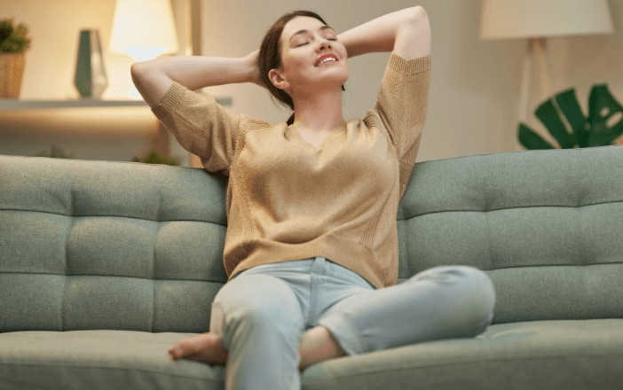
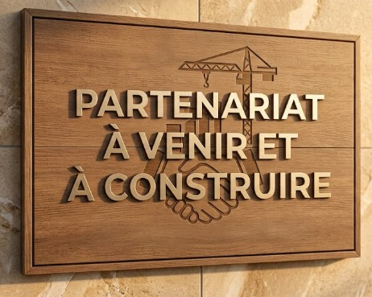
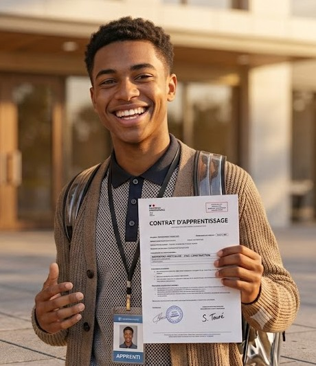

Gîte studio meublé à Domagné
Découvrez un gîte indépendant agencé en studio au design épuré et moderne, conçu pour votre confort par Emilie Leparoux d'Ambiance Maison.
Découvrir le logement en location
Du projet virtuel à la réalité
Si la vue ci-dessus présente une projection (souhaitée) réalisée par IA de notre futur gîte, les fondations prennent vie sur le terrain ! Le projet avance concrètement étape par étape.
Pour suivre l'évolution du chantier en direct, découvrir les coulisses et voir le terrain se transformer, rendez-vous sur notre blog.
Suivre l'avancement sur le blog
Votre séjour en gîte au "Relais de Chaumeré"
Ce studio en location à la nuit, pour quelques jours ou plus est entièrement indépendant et est situé dans notre jardin.
Il a été entièrement pensé pour maximiser l'espace et le confort de ses occupants quelque soit la durée de leur(s) séjour(s). Agencé de manière optimale sous la forme d'un studio tout équipé, ce gîte de charme met à votre disposition une literie de qualité supérieure telle qu'on la trouve dans un hotel de qualité, une cuisine astucieuse et équipé pour préparer vos repas en toute liberté, ainsi qu'une connexion internet haut débit indispensable pour le télétravail ou vos loisirs.
Chaque détail décoratif a été soigneusement sélectionné avec l'aide d'une décoratrice d'intérieur, Emilie Leparoux d'Ambiance Maison, pour créer une atmosphère douce et accueillante.
Pour planifier vos sorties, découvrez nos recommandations dans notre section tourisme en Haute-Bretagne ou consultez les derniers articles de notre blog local.
Une question ou une demande spécifique ? N'hésitez pas à nous joindre via notre page de contact pour préparer au mieux votre séjour.
Information importante : Le site internet et l'hébergement sont actuellement en cours de finalisation. La location de ce gîte studio ne sera accessible qu'à partir de 2027. Consultez notre grille de services & tarifs pour anticiper votre budget. Les réservations s'ouvriront d'abord sous la formule d'une location meublée flexible, idéale pour les actifs ou étudiants (pensez à vérifier nos numéros utiles pour vos démarches), avant de proposer une offre touristique. Pour toute question, notre page de contact reste ouverte.
✨ Confort Moderne

Équipements de qualité supérieure, rangements optimisés et décoration soignée.
📍 Emplacement Idéal
À proximité immédiate des commodités de Domagné et des axes Rennes-Vitré.
🌿 Esprit Serein
Un environnement calme à la campagne pour vous ressourcer pleinement. Profitez de votre séjour pour vous offrir une parenthèse de détente et bien-être ou tester des activités insolites dans le coin.
Notre démarche éco-responsable et solidaire

Louer notre hébergement, c'est aussi soutenir une vision d'accueil éthique, ancrée dans son territoire et respectueuse de l'environnement.
🤝 Économie locale & Engagement associatif

Un séjour qui a du sens.
En réservant directement sur ce site, vous économisez les commissions des grandes plateformes. Cet engagement financier me permet de soutenir directement l'A3PC (Association pour la Promotion du Pays de Chaumeré).
Né d'une volonté personnelle de redynamiser notre ruralité, ce projet a déjà fédéré une voisine engagée, avec l'ambition d'élargir ce cercle à d'autres habitants. À travers l'association, nous œuvrons pour renforcer le lien social, l'entraide et les services de proximité (événements de village, outils partagés). Votre séjour contribue concrètement à cette dynamique ultra-locale.
🎓 Logement solidaire & Alternance

Soutenir la jeunesse active du territoire.
Face aux difficultés de logement que rencontrent les étudiants, trouver un pied-à-terre stable s'apparente souvent à un parcours du combattant.
Plutôt que de figer les lieux via un bail mobilité rigide incompatible avec notre activité, nous avons fait le choix d'ouvrir ce meublé touristique de manière privilégiée aux jeunes en formation. L'objectif est simple : proposer un tarif juste et adapté pour leur garantir un toit de qualité lors de leurs sessions sur place, s'intégrant ainsi pleinement dans notre démarche d'utilité sociale locale.
☀️ Autonomie énergétique

Vers un habitat plus vertueux.
Nous avançons pas à pas vers l'autonomie. Le bâtiment produit d'ores et déjà sa propre électricité grâce à des panneaux photovoltaïques installés sur place.
Pour aller plus loin, nous étudions ou concevons des solutions complémentaires : un chauffe-eau solaire performant pour l'eau chaude sanitaire, ainsi qu'un système de rafraîchissement par puits provençal (ou une pompe à chaleur selon l'évolution technique) pour le confort thermique du studio. Chaque brique de ce projet vise à réduire notre empreinte environnementale.
Idéalement situé en Ille-et-Vilaine
En choisissant la location de notre gîte à Domagné, vous profitez d'un point de départ calme, central et stratégique pour découvrir les richesses de la Haute-Bretagne et faciliter vos déplacements, mais aussi pour explorer de petites pépites locales. Retrouvez toutes nos suggestions dans notre guide dédié au tourisme à Domagné et ses alentours.
Voici notre selection réduite :
🏰 Vitré
(à 15 min)

Une plongée saisissante au Moyen Âge avec son château fort remarquable et ses ruelles pavées. Une parfaite escapade en Haute-Bretagne à ne pas manquer.
🍔🏆🍷 Le Cella
(à 3 min)

Ce charmant bistrot de village cultive la convivialité et le goût du partage. Sacré parmi les champions de la Coupe de France du Burger, la Cheffe régale avec une cuisine maison, de saison et d'une gourmandise absolue. Consultez nos autres suggestions sur la page gastronomie.
🔎🏰 La prommenage
Henri Chesnais

Un monde de Miniatures est à découvrir juste à coté du gîte ; ce parc unique et original dévoile un monde miniature fascinant. Une visite insolite idéale en famille pour admirer des reproductions d'une précision remarquable réalisées pendant la retraite d'une agriculteur de la ville.
Consultez nos autres suggestions sur la page insolite.
📜 L'A3PC, au service du pays de Chaumeré. L'Association pour la Promotion du Pays de Chaumeré est une toute jeune association de village. Elle veut faire connaître notre territoire aux visiteurs comme aux habitants, organiser des événements pour se retrouver, encourager l'entraide entre voisins et mettre en avant les artisans et commerçants du coin. Une application ouverte à tous est en préparation. Son site propose aussi un récit de l'histoire de Chaumeré, une façon simple de mieux connaître le lieu où vous séjournez. Le gîte la soutient directement grâce aux réservations en direct. Découvrir l'association et l'histoire de Chaumeré